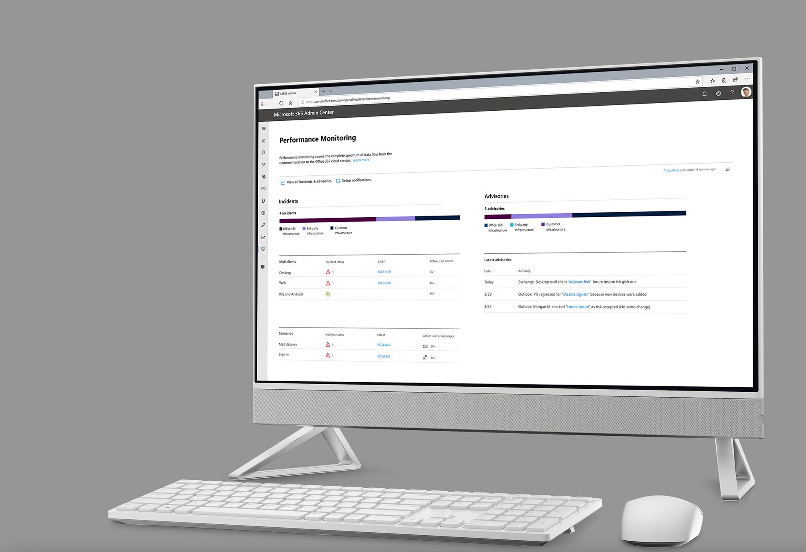
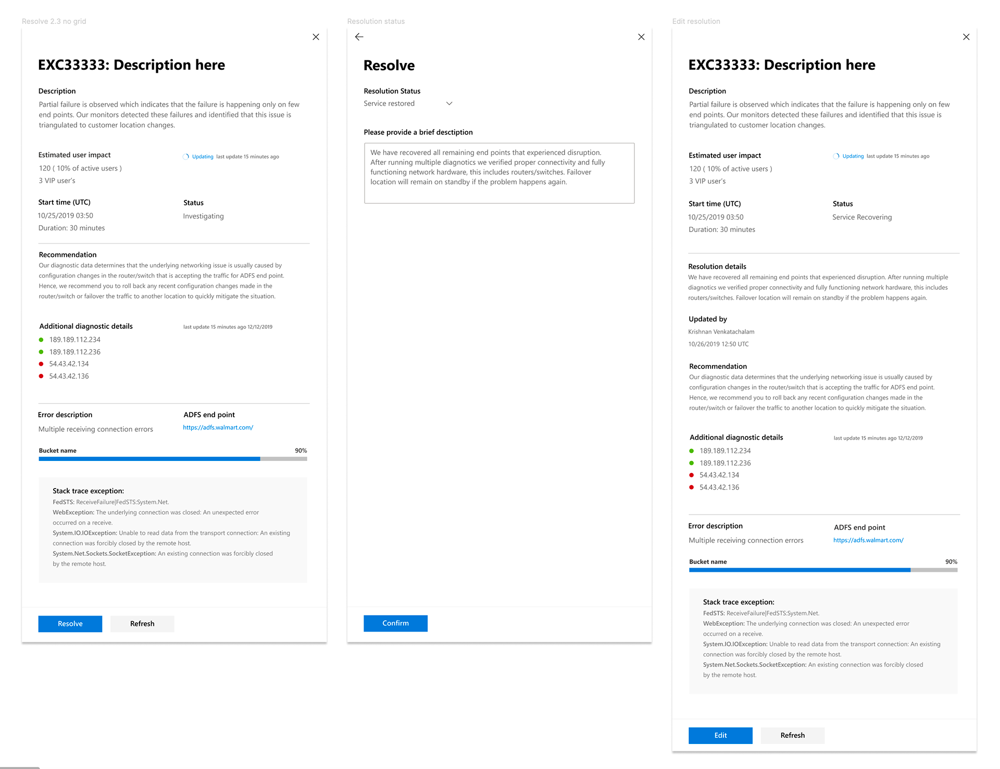
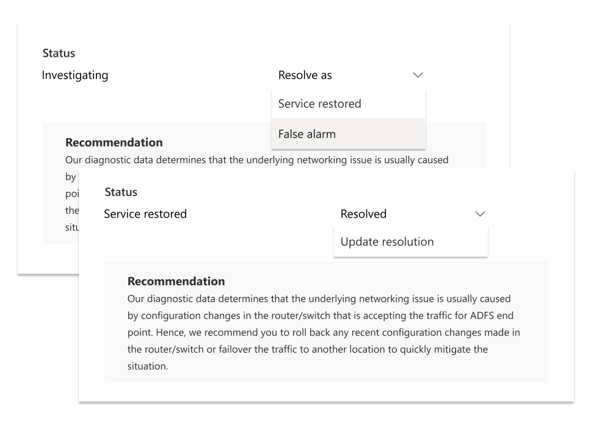
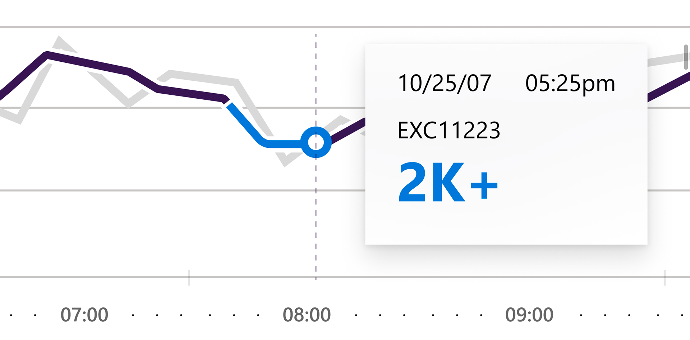
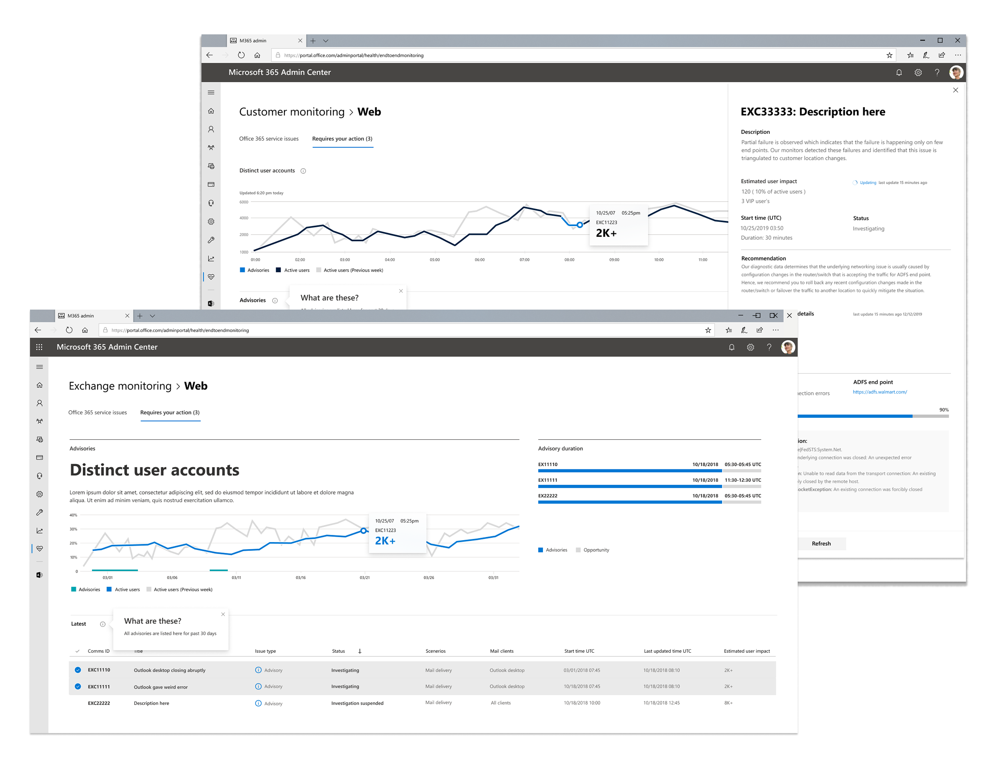
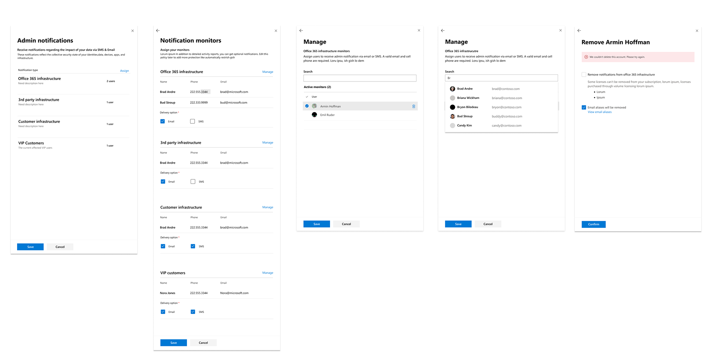
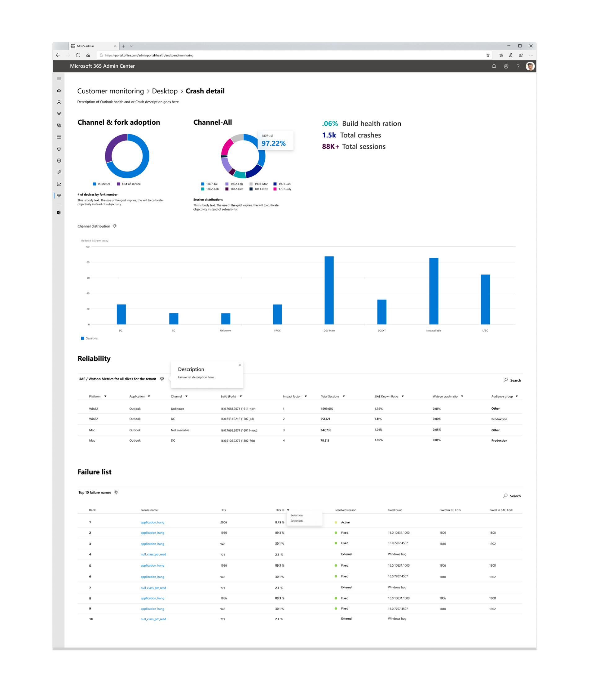
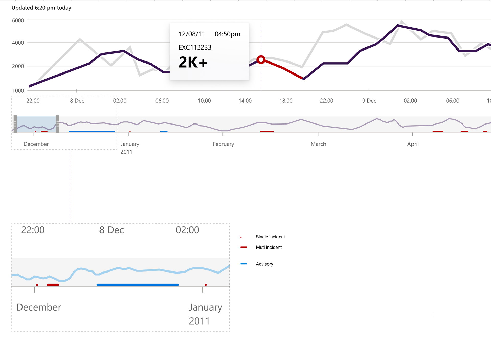
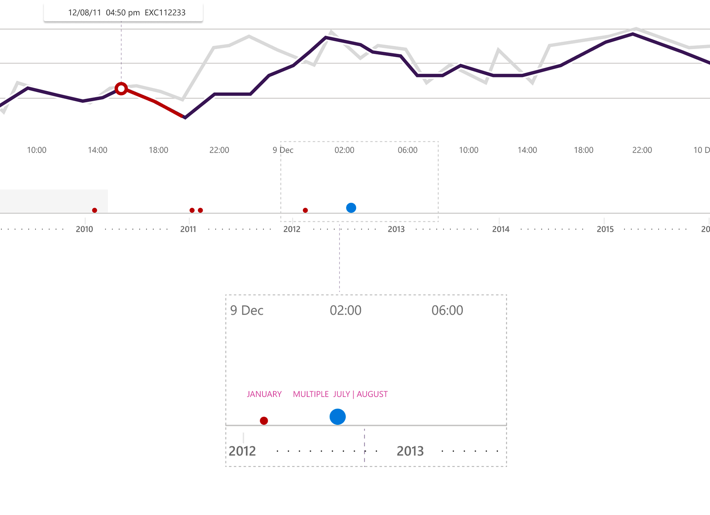

Microsoft 365 Admin Center
Performance Monitoring
A proactive monitoring surface for M365 tenants — real-time analytics, AI-assisted impact, and a visual language that lets admins anticipate disruption instead of reacting to it.

What shipped
Performance Monitoring is a tenant-facing experience in the Microsoft 365 Admin Center. It combines incident intelligence, advisory communication, and impact visualization so admins can see what is broken, who is affected, and what to do next — without leaving the console they already live in.
The work was designed with tenant and VIP research, iterative prototyping validated by user feedback, and close collaboration with the M365 Creative Studio. V1 is built on M365 user data: it anticipates need instead of waiting for a ticket to arrive.
Why this product exists
Service disruption in Microsoft 365 is rarely a single alert. It is a moving mix of tenant-level issues, Microsoft-level incidents, and users who need a path to resolution while the investigation is still open. Admins were bouncing between status pages, email, and tribal knowledge.
The job is not more dashboards. It is faster root-cause context, and a response that changes as the incident changes.
What I owned
- End-to-end product design for the V1 monitoring surface — overview, incident cards, advisories, and impact charts.
- Research with tenants and VIPs, then prototyping loops that made every state clickable so engineering and users could react to a real flow.
- The interaction model for investigation: status-aware actions, notification channels, and Outlook-native crash signals.
- Partnership with the M365 Creative Studio and the Outlook team on the surfaces that had to feel native, not bolted on.
01
Incident cards
Cards carry real-time intelligence: a clear problem description, AI-powered impact estimation, and precise timestamps. A dynamic newsfeed keeps the investigation current while recommendations stay attached to the incident — not buried in a separate tool.

02
Advisories that users can act on
Advisories make active issues, impact, and the path to resolution visible in real time. Tenant-level problems get clear steps the user can take. Microsoft-level incidents stay transparent about repair work already in motion — so people can fix what is theirs and wait with context when it is not.
03
Duration and impact, read as one story
User count and duration of impact run as two lines. Color separates the metrics; hover reveals the point behind the number. The chart is a curated composition — enough to see pattern, not so much that an admin has to decode it under pressure.


04
Outlook, where the crash already is
Built with the Outlook team, the integration flags crash scenarios and names the culprit in the place people already work. Proactive alerts stay inside a familiar client instead of asking admins to open yet another console.

05
Historic timelines
Chronology is the honest record. Red marks incidents, blue marks advisories. Larger dots stand in for stacked scenarios — size as a signal, not decoration — so a week of disruption can be read as a story instead of a log dump.


Where the ideas were proven
Prototypes were treated as the product: everything clickable, every state a UI treatment, conditional copy, and page transitions. That gave research sessions and engineering reviews the same artifact — different states, dynamic text, and a flow you could actually walk.

